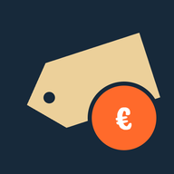

Leixien
Nel tempo libero costruisco strumenti gratuiti che risolvono piccoli problemi di tutti i giorni. Senza pubblicità e senza abbonamenti.
Progetti
-

RovistinoBot Telegram che cerca annunci dell'usato su Subito, Wallapop e Vinted, con avvisi per le novità e i ribassi. - TrackerPriceAmazon-BotBot Telegram che controlla il prezzo dei prodotti Amazon: li salvi e ricontrolli il prezzo con un tocco, anche sugli Amazon di altri paesi.
- SF Quick LoginEstensione Safari per macOS per entrare in qualsiasi org Salesforce con un clic. In arrivo sul Mac App Store.
- OpenProject su Raspberry PiGuida passo passo, pensata per chi non ha mai usato un Raspberry, per trasformarlo in un server di gestione progetti.
- Pokémon Fire Ash in italianoTraduzione italiana non ufficiale del fan game Pokémon Fire Ash, con un patcher che la applica in automatico.
Gli altri progetti sono su GitHub.